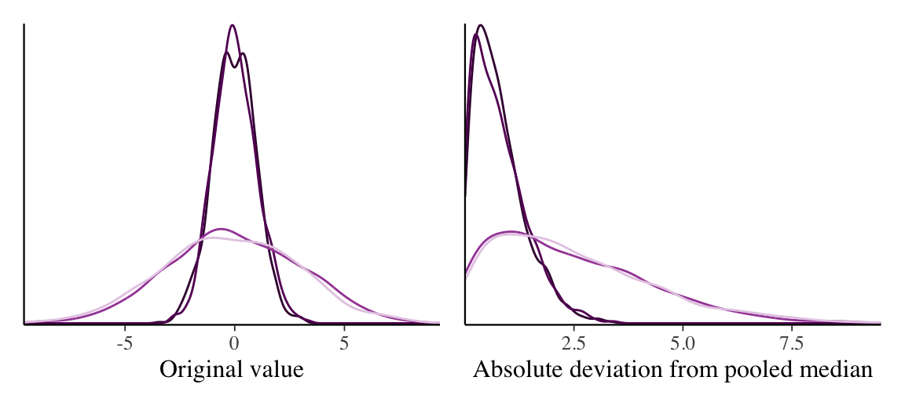

rhat_by_hand <- function(x) {
L <- nrow(x)
W <- mean(apply(x, 2, var))
B <- L * var(colMeans(x))
sqrt(((L - 1) / L * W + B / L) / W)
}
split_halves <- function(x) {
half <- floor(nrow(x) / 2)
cbind(x[seq_len(half), , drop = FALSE],
x[seq.int(nrow(x) - half + 1, nrow(x)), , drop = FALSE])
}
set.seed(48407)
normal_chains <- matrix(rnorm(4000), ncol = 4)
rbind(
unsplit = c(by_hand = rhat_by_hand(normal_chains),
package = rhat_basic(normal_chains, split = FALSE)),
split = c(by_hand = rhat_by_hand(split_halves(normal_chains)),
package = rhat_basic(normal_chains, split = TRUE))
)
#> by_hand package
#> unsplit 1.000113 1.000113
#> split 1.000048 1.000048Appendix C — Technical Notes on MCMC
These notes expand on the diagnostics in Chapter 4 and derive the acceptance rule used in Chapter 5 and Chapter 6 (Metropolis–Hastings and Adaptive Proposals). Exercise 4.7 uses the R-hat functions in Section C.2.
C.1 The variance of a dependent average
For \(N\) independent draws, the variance of their average is \(\sigma^2/N\). With dependent draws, the covariances also contribute. For a stationary chain, \(\operatorname{Cov}(\theta^{(t)},\theta^{(t+k)})=\sigma^2\rho_k\). There are \(N-k\) pairs of values separated by lag \(k\), giving \[ \operatorname{Var}(\bar\theta) =\frac{\sigma^2}{N}\left[1+2\sum_{k=1}^{N-1} \left(1-\frac{k}{N}\right)\rho_k\right]. \tag{C.1}\] This expression is exact for a stationary chain with finite variance. When \(N\) is large relative to the lags with appreciable correlation, the weights \(1-k/N\) are close to one. Extending the sum gives the large-\(N\) approximation used in Chapter 4: \[ \operatorname{Var}(\bar\theta)\approx\frac{\sigma^2}{N} \left(1+2\sum_{k=1}^{\infty}\rho_k\right). \]
Positive autocorrelation increases this variance. Negative autocorrelation can reduce it: for example, the AR(1) formula gives \(N_{\mathrm{eff}}>N\) when \(\phi<0\). Thinning such a chain can remove the benefit of its negative autocorrelation.
Bias and variation can also be combined in one expression. For an estimate \(\widehat\mu\) of a mean \(\mu\), \[ \mathbb E[(\widehat\mu-\mu)^2] =\bigl(\mathbb E[\widehat\mu]-\mu\bigr)^2 +\operatorname{Var}(\widehat\mu). \tag{C.2}\] The mean squared error on the left is the sum of squared bias and Monte Carlo variance. Bias describes a systematic displacement from the true mean; Monte Carlo variance describes how much the estimates vary between runs (Margossian & Gelman, 2026).
C.2 Calculating basic and split R-hat
For \(m\) chains of length \(L\), let \(s_j^2\) and \(\bar\theta_j\) be the variance and mean within chain \(j\), and \(\bar\theta_{\cdot}\) the average of the chain means. Then \[ W=\frac1m\sum_{j=1}^m s_j^2,\qquad B=\frac{L}{m-1}\sum_{j=1}^m(\bar\theta_j-\bar\theta_{\cdot})^2. \] We illustrate the calculation with four records of independent standard Normal draws. The following functions implement the basic R-hat formula and split each column into equal-length first and last halves. For an odd number of values, the middle value is left out.
Within each row, the hand and package calculations match because they implement the same formula. The split and unsplit results can also look nearly identical after rounding when both halves explore similar values. rhat_basic() splits by default; split = FALSE disables that step.
C.3 Rank normalization and folding
Chains can agree about their center and still disagree about their spread. Suppose two records vary narrowly around zero while two others range much farther above and below it. Their means can be similar, so comparing means alone may give little warning.
The following code creates that situation. All four records have an expected mean of zero, but the last two have standard deviation three instead of one:
set.seed(48408)
same_mean <- cbind(rnorm(1000, 0, 1), rnorm(1000, 0, 1), rnorm(1000, 0, 3), rnorm(1000, 0, 3))
c(basic = rhat_basic(same_mean), rank_normalized = posterior::rhat(same_mean))
#> basic rank_normalized
#> 1.000529 1.187145posterior::rhat() adds two improvements to the basic split calculation (Vehtari et al., 2021).
Rank normalization replaces values by their positions in an ordered list. For example, the values \((-3,-1,1,3)\) have ranks \((1,2,3,4)\). An extremely large value still receives the highest rank, but its numerical size no longer dominates the comparison.
After splitting the chains, we rank all their retained values together. Ties receive their average rank. We then convert the ranks to standard Normal scores. If \(r\) is a rank and \(S\) the total number of ranked values, the transformation is \[ z=\Phi^{-1}\!\left(\frac{r-3/8}{S+1/4}\right). \] The expression inside \(\Phi^{-1}\) turns a rank into a probability between zero and one; \(\Phi^{-1}\) gives the corresponding standard Normal quantile. For the four-value example, the scores are approximately \((-1.05,-0.30,0.30,1.05)\). We calculate basic R-hat on the scores. This makes the comparison less sensitive to extreme values, including those from distributions with very long tails. Bulk ESS uses this same transformation of the split chains before estimating ESS. Tail ESS instead computes ESS for indicators of falling below the pooled 5% quantile and below the pooled 95% quantile, and reports the smaller value.
Folding checks spread more directly. Replace each original value by its distance from the pooled median. In the four-value example the median is zero, so \((-3,-1,1,3)\) becomes \((3,1,1,3)\). The sign disappears and distance from the center remains. Wider chains now tend to have larger values than narrower chains. We split and rank-normalize these distances, then calculate R-hat again.
The reported posterior::rhat() is the larger of these two results. Figure C.1 shows how folding separates records with different spreads. In this example, ranking the original values alone can miss the problem, while folding reveals it. The code below calculates both parts and compares their maximum with posterior::rhat():
rank_normalize <- function(x) {
ranks <- rank(x, ties.method = "average")
scores <- qnorm((ranks - 3/8) / (length(ranks) + 1/4))
matrix(scores, nrow = nrow(x), ncol = ncol(x))
}
rank_component <- rhat_by_hand(rank_normalize(split_halves(same_mean)))
folded <- abs(same_mean - median(same_mean))
fold_component <- rhat_by_hand(rank_normalize(split_halves(folded)))
c(rank_component = rank_component, folded_component = fold_component,
maximum = max(rank_component, fold_component), package = posterior::rhat(same_mean))
#> rank_component folded_component maximum package
#> 1.000340 1.187145 1.187145 1.187145
C.4 Deriving the Metropolis acceptance probability
The Metropolis rule accepts every proposal to a higher target density and only some proposals to a lower one. How do we obtain these probabilities? We can choose them by solving the detailed balance equation (van den Bergh et al., 2026, Appendix B).
Let \(a\) be the current state and \(b\) a proposed state. Write \(\alpha_{\mathrm{fwd}}\) for the probability of accepting the move from \(a\) to \(b\), and \(\alpha_{\mathrm{rev}}\) for the acceptance probability if we instead propose \(a\) from \(b\). These are probabilities for two possible directions, not two decisions made in one iteration. For this derivation, assume that both states have positive, finite target density and that the proposal densities in both directions are positive.
C.4.1 Relating the two directions
Detailed balance is satisfied when \[ f(a)q(b\mid a)\alpha_{\mathrm{fwd}} =f(b)q(a\mid b)\alpha_{\mathrm{rev}}. \tag{C.3}\] For the symmetric proposals in Chapter 5, \(q(b\mid a)=q(a\mid b)\), so these factors cancel. Dividing by \(f(a)\) leaves \[ \alpha_{\mathrm{fwd}}=r\alpha_{\mathrm{rev}}, \qquad r=\frac{f(b)}{f(a)}. \tag{C.4}\] Once we choose an acceptance probability in one direction, this equation fixes the probability in the other. The choices must also lie between zero and one.
Since \(\alpha_{\mathrm{rev}}\leq1\), the equation gives \(\alpha_{\mathrm{fwd}}\leq r\). We also require \(\alpha_{\mathrm{fwd}}\leq1\). The largest permitted forward probability is therefore \(\min(1,r)\). Taking this value gives the Metropolis rule: \[ \alpha_{\mathrm{fwd}}=\min(1,r), \qquad \alpha_{\mathrm{rev}}=\min(1,1/r). \tag{C.5}\]
If \(r<1\), set \(\alpha_{\mathrm{rev}}=1\) and obtain \(\alpha_{\mathrm{fwd}}=r\). The proposal goes to a lower target density, so it is accepted only sometimes. If \(r\geq1\), set \(\alpha_{\mathrm{fwd}}=1\) and obtain \(\alpha_{\mathrm{rev}}=1/r\). The proposal goes to an equal or higher target density and is always accepted. In either case, the equation is satisfied in both directions. Proposals outside the target support are rejected.
C.4.2 A numerical comparison
Suppose \(f(a)=0.2\), \(f(b)=0.1\), and the symmetric proposal density is 0.3 in either direction. Then \(r=0.5\). The two sides of Equation C.3 are \[ \underbrace{0.2\times0.3\times0.5}_{a\text{ to }b} =\underbrace{0.1\times0.3\times1}_{b\text{ to }a} =0.03. \] The target assigns a higher density to \(a\), but the smaller acceptance probability from \(a\) to \(b\) compensates for that difference.
There are other balanced choices. For example, \(\alpha_{\mathrm{fwd}}=0.25\) and \(\alpha_{\mathrm{rev}}=0.5\) also satisfy Equation C.4, since \(0.25=0.5\times0.5\). Both sides of the balance equation then equal 0.015. Both directions would produce more rejections. The Metropolis choice makes both acceptance probabilities as large as possible while preserving their required relationship; detailed balance alone does not specify a unique rule.
C.4.3 Allowing asymmetric proposals
When proposal densities differ between directions, retain them in Equation C.3. The same rearrangement gives \[ \alpha_{\mathrm{fwd}}=R\alpha_{\mathrm{rev}}, \qquad R=\frac{f(b)q(a\mid b)}{f(a)q(b\mid a)}. \] Applying the same bounds yields the Metropolis–Hastings acceptance probability \[ \alpha(a,b)=\min\!\left\{1, \frac{f(b)q(a\mid b)}{f(a)q(b\mid a)}\right\}. \tag{C.6}\] The reverse proposal density is in the numerator and the forward proposal density is in the denominator. This adjustment accounts for a proposal mechanism that favors one direction. Chapter 6 (Metropolis–Hastings and Adaptive Proposals) develops examples of such proposals. With a symmetric proposal, their ratio is one and the expression reduces to the rule derived above.